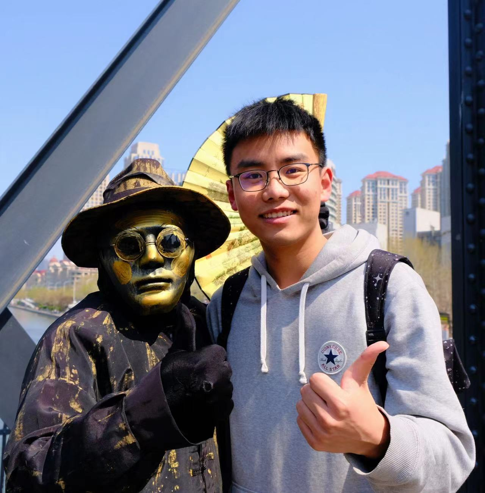

Yuan Zhang
Ph.D. Candidate |
 |


Biography
Yuan Zhang is a Ph.D. Candidate at Peking University (PKU),
advised by Prof. Shanghang Zhang and Prof. Kuan Cheng. Previously, he received his M.Eng. degree from
Peking University and B.Eng. degree from Hohai University (HHU).
He used to intern at SenseTime Research, Alibaba (DAMO Academy), and ByteDance (Seed Foundation Model).
His major research interests lie within efficient machine learning algorithms, like
- Efficient AI (KD, Pruning, Quantization)
- Multimodal Large Language Model
Education
|
PhD Candidate at Center on Frontiers of Computing Studies.
Sep. 2024 – Jun. 2028
|

|
|
Master Degree.
Sep. 2020 – Jun. 2023
|
|
|
Bachelor Degree.
Sep. 2016 – Jun. 2020
|
Selected Publications
First-author:-
C1 SparseVLM: Visual Token Sparsification for Efficient Vision-Language Model Inference
Yuan Zhang, ChunKai Fan, Junpeng Ma, and Shanghang Zhang
International Conference on Machine Learning (ICML), 2025. -
C2 Unveiling the Tapestry of Consistency in Large Vision-Language Models
Yuan Zhang, Fei Xiao, Tao Huang, and Haoyuan Guo
Advances in Neural Information Processing Systems (NeurIPS), 2024. -
C3 FreeKD: Knowledge Distillation via Semantic Frequency Prompt
Yuan Zhang, Tao Huang, Jiaming Liu, Tao Jiang, Kuan Cheng, Shanghang Zhang
Computer Vision and Pattern Recognition (CVPR), 2024. -
C4 Avatar Knowledge Distillation: Self-ensemble Teacher Paradigm with Uncertainty
Yuan Zhang, Weihua Chen, Yichen Lu, Tao Huang, Xiuyu Sun, Jian Cao
ACM International Conference on Multimedia (ACM MM), 2023. -
C5 Distilling Cross-Modal Knowledge via Feature Disentanglement
Junhong Liu, Yuan Zhang, Tao Huang, Wenchao Xu, Renyu Yang
AAAI Conference on Artificial Intelligence (AAAI), 2025. -
C6 MoVE-KD: Knowledge Distillation for VLMs with Mixture of Visual Encoders
Jiajun Cao, Yuan Zhang, Tao Huang, Ming Lu, Qizhe Zhang, Ruichuan An, Ningning Ma, Shanghang Zhang
Computer Vision and Pattern Recognition (CVPR), 2025. -
C7 Knowledge Diffusion for Distillation
Tao Huang, Yuan Zhang, Mingkai Zheng, Shan You, Fei Wang, Chen Qian, Chang Xu
Advances in Neural Information Processing Systems (NeurIPS), 2023. -
C8 Masked Distillation with Receptive Tokens
Tao Huang*, Yuan Zhang*, Shan You, Fei Wang, Chen Qian, Jian Cao, Chang Xu
International Conference on Learning Representations (ICLR), 2023.
Manuscripts
-
arXiv ChainV: Atomic Visual Hints Make Multimodal Reasoning Shorter and Better
Yuan Zhang, Ming Lu, Junwen Pan, Tao Huang, Kuan Cheng, Qi She, Shanghang Zhang
arXiv preprint arXiv:2511.17106 (2025). -
arXiv Loss-Oriented Ranking for Automated Visual Prompting in LVLMs
Yuan Zhang, Chun-Kai Fan, Tao Huang, Ming Lu, Sicheng Yu, Junwen Pan, Kuan Cheng, Qi She, Shanghang Zhang
arXiv preprint arXiv:2506.16112 (2025). -
arXiv DAMO-YOLO: A Report on Real-Time Object Detection Design
Xianzhe Xu*, Yiqi Jiang*, Weihua Chen*, Yilun Huang*, Yuan Zhang*, Xiuyu Sun
arXiv preprint arXiv:2211.15444 (2022).
Research Experience
|
Remote Research Intern (Advisor: Wenzhao Zheng).
Sep. 2024 – Dec. 2024
|
|
(S1) Researcher (Advisor: Haoyuan Guo).
(S2) Research Intern (Advisor: Ming Lu). Jul. 2023 – Jul. 2024, Jan. 2025 – Now
|

|
|
Research Intern (Advisor: Weihua Chen).
Jun. 2022 – Feb. 2023
|
|
Research Intern (Advisor: Tao Huang).
Mar. 2022 – Jun. 2022
|
Academic Services
Reviewer for Conferences:- CVPR 2024 | ECCV 2024 | ACM MM 2024 | NeurIPS 2024
- ICLR 2025 | AISTATS 2025 | CVPR 2025 | ICML 2025 | ICCV 2025 | NeurIPS 2025
- WACV 2026 | AAAI 2026 | AISTATS 2026 | ICLR 2026 | CVPR 2026
- T-IP | T-MLR | T-MM |T-CSVT | T-NNLS
Open Source Projects
-
YOLOv5-Multibackbone-Compression
Description: YOLOv5 Series Multi-backbone(TPH-YOLOv5, Ghostnet, ShuffleNetv2, Mobilenetv3Small, EfficientNetLite, PP-LCNet, SwinTransformer YOLO), Module(CBAM, DCN), Pruning (EagleEye, Network Slimming), Quantization (MQBench) and Deployment (TensorRT, ncnn) Compression Tool Box.Duty: Owner.Oct. 2021 – Mar. 2022
-
DAMO-YOLO
Description: First make distillation great again on all size models of YOLO series (1.0 AP+), especially on the small size.Duty: Distill and Deployment.Jun. 2022 – Sep. 2022
Awards and Honor
-
Tencent Scholarship
Ph.D. period (¥ 20,000).Sep. 2025 -
Excellent Graduate of Peking University
Master period (Top 5% in school).June 2023 -
National Scholarship of China
Master period (¥ 20,000).Nov. 2021 -
National Scholarship of China
Undergraduate period (¥ 8,000).Nov. 2018